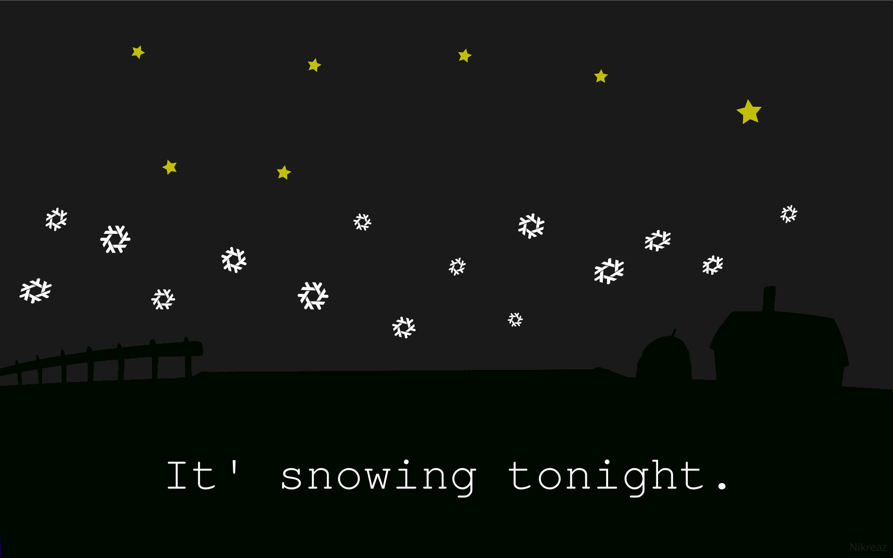

---------------------------------------------------------
30/09/2023
Alright, screw social media, time to return to RSS feeds. As you probably know, i don't use Twitter (X), Threads, Facebook, other social media websites because they are being used just to control and sell your data to advertisers. The only social media account i had was on one of Mastodon instances. But i don't use it very frequently. The reason is because it's basically the same as Twitter (X), except the server code is free software, it's federated and stuff. But it's still the same concept of Twitter. TL;DR I'm continuing my blog hosted on Github pages. Why use Github as a VPS? Because i don't want to experience domain name hassle. My blog has no Javascript at all. It's plain HTML written by me. BTW, i'm gonna put more effort in my videos from now on. I'll try at least.
---------------------------------------------------------
You can subscribe to my RSS feed (paste this link into Thunderbird or any other agregator)
---------------------------------------------------------
24/09/2023 The blog is back
After about 7 months i'm continuing my blog. Please don't wait for posts on Codeberg nor Neocities. I'm not in the mood ringht now to write anything, here will be a post tomorrow.
---------------------------------------------------------
07/05/2023 The Gentoo-styled NixOS Wallpaper

It's snowing tonight. (Update 24/09/2023: why are there stars when it's snowing?)
---------------------------------------------------------
10/03/2023 Frutiger aero is kind of mainstream now
I really love skeuomorphism and Windows 7/Vista themed icons & UI. I don't like minimalism that much. I never liked minimalism and modernism. I see now that Frutiger aero, Skeuomorphism and neumorphism are becoming popular since the start of this year. Looking forward to Nintendo improving the Switch's menu just like it was on Wii U. RHYMES.
---------------------------------------------------------
1/03/2023 Why i switched to GNU/Linux
For over a year i've been a Mac user. I thought that MacOS would be the final move. However, i didn't liked it that much. The problem is in bloatware. While you're installing apps on MacOS, they generate caches and .plist files. At the end, if you'll install too much software on Mac, and then delete it, the cache will stay. MacOS of cource has tools like CleanMyMac, but at the end they are proprietary garbage. So i decided to turn on my old Thinkpad and install Arch Linux to it again. I riced my BSPWM desktop, sent to a friend, and he said something like "Full desktop environments are better". But that doesn't really matters now. I can now proudly say that i use Arch btw. I hate bloat.
{kind=link}